# Load required packages
library(tidyverse) # For data manipulation and visualization
library(car) # For regression diagnostics (VIF, etc.)
library(corrplot) # For correlation plots
library(GGally) # For pairs plots
library(broom) # For tidy model outputs
library(performance) # For model performance metrics
library(see) # For better diagnostic plotsMultiple Regression
Several predictors
Hands-on activity: multiple linear regression.
Analysis of Net Primary Production in Forests: A Modern Tidyverse Approach
Based on Michaletz et al. (2014) data
Introduction
This analysis examines the relationships between Net Primary Production (npp) and various climate and forest characteristics across global forest sites. We’ll explore multicollinearity, model selection, and variable transformations.
Key Learning Objectives:
- Understand multicollinearity in multiple regression
- Learn model diagnostics and assumption checking
- Practice variable selection techniques
- Apply data transformations appropriately
Load Required Packages
Load and Explore the Data
# Load the forest npp data
forest_df <- read_csv("data/michaletz_etal_2014_clean.csv")Rows: 1220 Columns: 8
── Column specification ────────────────────────────────────────────────────────
Delimiter: ","
chr (1): leaf
dbl (7): npp, age, biomass, season, temp, precip, teb
ℹ Use `spec()` to retrieve the full column specification for this data.
ℹ Specify the column types or set `show_col_types = FALSE` to quiet this message.# Display top lines
head(forest_df)# A tibble: 6 × 8
npp age biomass season temp precip teb leaf
<dbl> <dbl> <dbl> <dbl> <dbl> <dbl> <dbl> <chr>
1 2084 104. 18198. 11 25.3 1888 0.55 broadleaf
2 2234 333. 54523. 12 26.9 2348. 0.6 broadleaf
3 2714 213. 41358. 12 26.9 2348. 0.6 broadleaf
4 2828 114. 31557. 12 26.7 2784. 1.25 broadleaf
5 2882 113. 21417 12 26.7 2784. 1.25 broadleaf
6 774 79 11188 3 -3.53 408. 1.8 broadleafData Preparation
Following the original analysis, we’ll focus on the key variables from a cleaned dataframe
1. Initial Exploration: Variable Relationships and Multicollinearity
Correlation Matrix and Visualization
# Create correlation matrix for numeric variables only
num_vars <- forest_df %>%
select_if(is.numeric)
# Calculate correlation matrix
cor_matrix <- cor(num_vars, use = "complete.obs")
# Display correlation matrix
cor_matrix npp age biomass season temp precip
npp 1.0000000 -0.153215979 0.4591083 0.5614272 0.5520590 0.531186333
age -0.1532160 1.000000000 0.5923809 -0.2715014 -0.2307658 0.003642104
biomass 0.4591083 0.592380901 1.0000000 0.1317097 0.1551923 0.353901541
season 0.5614272 -0.271501387 0.1317097 1.0000000 0.9226905 0.567630275
temp 0.5520590 -0.230765849 0.1551923 0.9226905 1.0000000 0.576659967
precip 0.5311863 0.003642104 0.3539015 0.5676303 0.5766600 1.000000000
teb -0.3167187 -0.011779155 -0.2748724 -0.2491779 -0.2495479 -0.291376661
teb
npp -0.31671865
age -0.01177916
biomass -0.27487245
season -0.24917787
temp -0.24954794
precip -0.29137666
teb 1.00000000# Create a visual correlation plot
corrplot(cor_matrix, method = "color", type = "upper",
addCoef.col = "grey45", tl.cex = 0.8, number.cex = 0.7)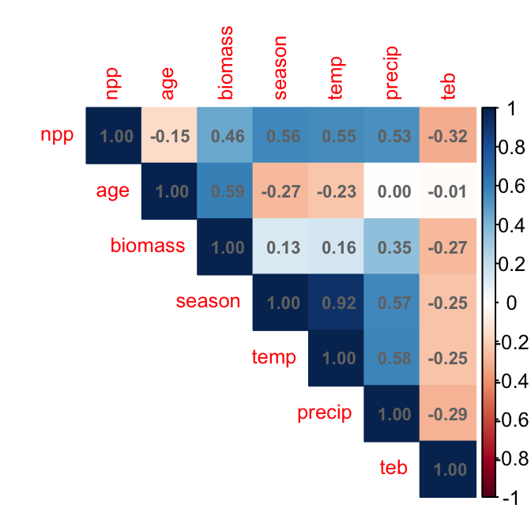
Pairs Plot for Visual Inspection
# Create pairs plot to visualize relationships
# This replaces the original pairs() function with ggplot2
forest_df %>%
select(-leaf) %>% # Exclude categorical variable for pairs plot
ggpairs(
upper = list(continuous = wrap("cor", size = 5)),
lower = list(continuous = wrap("points", alpha = 0.6, size = 0.8))
) +
theme_minimal()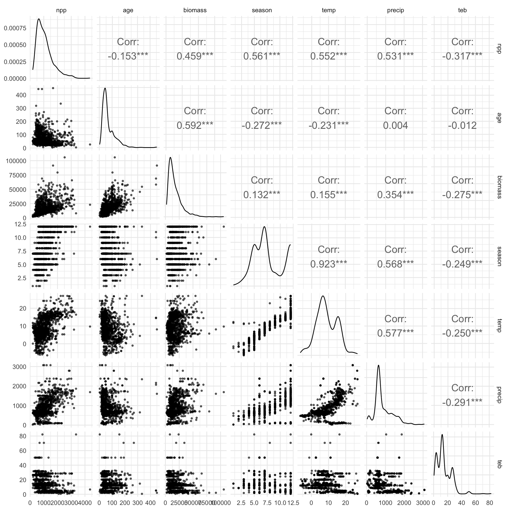
2. Initial Multiple Regression Model
Let’s start with a full model including all predictors:
# Fit initial model with all predictors (Model 1)
model_init <- lm(npp ~ age + biomass + season + temp +
precip + teb + leaf, data = forest_df)
# Get model summary
summary(model_init)
Call:
lm(formula = npp ~ age + biomass + season + temp + precip + teb +
leaf, data = forest_df)
Residuals:
Min 1Q Median 3Q Max
-1331.10 -206.27 -34.09 166.94 2760.41
Coefficients:
Estimate Std. Error t value Pr(>|t|)
(Intercept) 583.92959 53.81169 10.851 < 2e-16 ***
age -4.78822 0.28518 -16.790 < 2e-16 ***
biomass 0.03154 0.00122 25.848 < 2e-16 ***
season 41.18220 9.49073 4.339 1.55e-05 ***
temp 4.61281 4.37372 1.055 0.291788
precip 0.09674 0.02852 3.392 0.000716 ***
teb -2.12880 1.08408 -1.964 0.049794 *
leafneedle -267.00569 22.43078 -11.904 < 2e-16 ***
---
Signif. codes: 0 '***' 0.001 '**' 0.01 '*' 0.05 '.' 0.1 ' ' 1
Residual standard error: 351.7 on 1212 degrees of freedom
Multiple R-squared: 0.6415, Adjusted R-squared: 0.6394
F-statistic: 309.8 on 7 and 1212 DF, p-value: < 2.2e-16Check for Multicollinearity
# Calculate Variance Inflation Factors (VIF)
vif_values <- vif(model_init)
vif_values age biomass season temp precip teb leaf
1.993348 2.061766 7.079004 6.972147 1.831127 1.167007 1.236588 # Create a data frame for better visualization
vif_df <- data.frame(
Variable = names(vif_values),
VIF = as.numeric(vif_values)
) %>%
arrange(desc(VIF))
# Visualize VIF values
ggplot(vif_df, aes(x = reorder(Variable, VIF), y = VIF)) +
geom_col(fill = "steelblue", alpha = 0.7) +
geom_hline(yintercept = 10, color = "red", linetype = "dashed",
linewidth = 1) +
geom_hline(yintercept = 5, color = "orange", linetype = "dashed",
linewidth = 1) +
coord_flip() +
labs(
title = "Variance Inflation Factors",
subtitle = "Red line: VIF = 10 (serious concern), Orange line: VIF = 5 (moderate concern)",
x = "Variables",
y = "VIF"
) +
theme_minimal()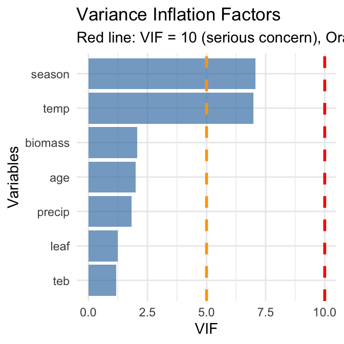
Address Multicollinearity by Removing Growing Season
Based on the original analysis, season and Temperature are highly correlated. Let’s remove season:
# Model 2: Remove season due to multicollinearity
model_2 <- lm(npp ~ age + biomass + temp + precip + teb + leaf,
data = forest_df)
# Model summary
summary(model_2)
Call:
lm(formula = npp ~ age + biomass + temp + precip + teb + leaf,
data = forest_df)
Residuals:
Min 1Q Median 3Q Max
-1309.94 -209.40 -42.65 167.71 2898.47
Coefficients:
Estimate Std. Error t value Pr(>|t|)
(Intercept) 7.511e+02 3.785e+01 19.845 < 2e-16 ***
age -5.004e+00 2.829e-01 -17.690 < 2e-16 ***
biomass 3.180e-02 1.228e-03 25.905 < 2e-16 ***
temp 2.112e+01 2.173e+00 9.718 < 2e-16 ***
precip 1.120e-01 2.851e-02 3.929 9.02e-05 ***
teb -2.255e+00 1.092e+00 -2.066 0.039 *
leafneedle -2.634e+02 2.258e+01 -11.666 < 2e-16 ***
---
Signif. codes: 0 '***' 0.001 '**' 0.01 '*' 0.05 '.' 0.1 ' ' 1
Residual standard error: 354.3 on 1213 degrees of freedom
Multiple R-squared: 0.6359, Adjusted R-squared: 0.6341
F-statistic: 353.1 on 6 and 1213 DF, p-value: < 2.2e-16# Check VIF again
vif_values2 <- vif(model_2)
vif_values2 age biomass temp precip teb leaf
1.932806 2.056724 1.696787 1.803266 1.166162 1.234906 3. Exploring Variable Transformations
Check the Shape of Relationships with Partial Regression Plots
# Create partial regression plots (Added Variable Plots)
# This helps us see the relationship between each predictor and response
# after accounting for other variables
par(mfrow = c(2, 3))
avPlots(model_2, main = "Partial Regression Plots")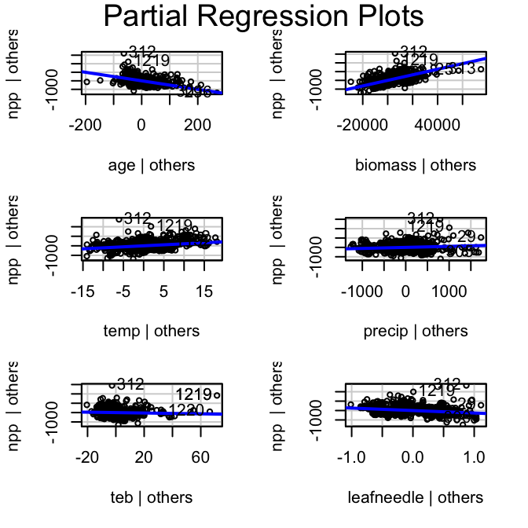
par(mfrow = c(1, 1))Apply Log Transformation to age
The original analysis found that age showed a curvy relationship. Let’s try log transformation: REally what you should do is log transform of the response variable first..
# Create dataset with log-transformed age
forest_df <- forest_df %>%
mutate(log_age = log10(age))
# Model 3: With log-transformed age
model_3 <- lm(npp ~ log_age + biomass + temp + precip + teb + leaf,
data = forest_df)
# Model summary
summary(model_3)
Call:
lm(formula = npp ~ log_age + biomass + temp + precip + teb +
leaf, data = forest_df)
Residuals:
Min 1Q Median 3Q Max
-1282.97 -203.31 -23.13 163.75 2810.76
Coefficients:
Estimate Std. Error t value Pr(>|t|)
(Intercept) 2.237e+03 8.961e+01 24.962 < 2e-16 ***
log_age -1.012e+03 5.064e+01 -19.973 < 2e-16 ***
biomass 3.313e-02 1.194e-03 27.755 < 2e-16 ***
temp 1.723e+01 2.159e+00 7.982 3.33e-15 ***
precip 7.194e-02 2.781e-02 2.587 0.00981 **
teb -2.315e+00 1.061e+00 -2.183 0.02925 *
leafneedle -2.852e+02 2.177e+01 -13.105 < 2e-16 ***
---
Signif. codes: 0 '***' 0.001 '**' 0.01 '*' 0.05 '.' 0.1 ' ' 1
Residual standard error: 344.7 on 1213 degrees of freedom
Multiple R-squared: 0.6553, Adjusted R-squared: 0.6536
F-statistic: 384.4 on 6 and 1213 DF, p-value: < 2.2e-16# Compare partial regression plots
par(mfrow = c(2, 3))
avPlots(model_3, main = "Partial Regression Plots (Log age)")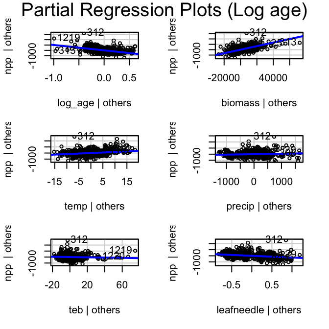
par(mfrow = c(1, 1))4. Model Diagnostics and Assumption Checking
# Create diagnostic plots
par(mfrow = c(1, 1))
plot(model_3, main = "Model Diagnostics")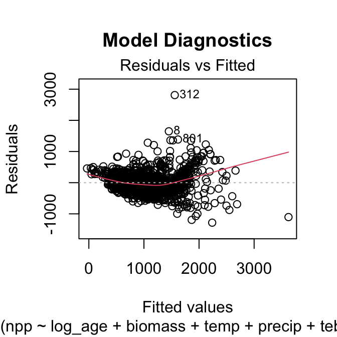
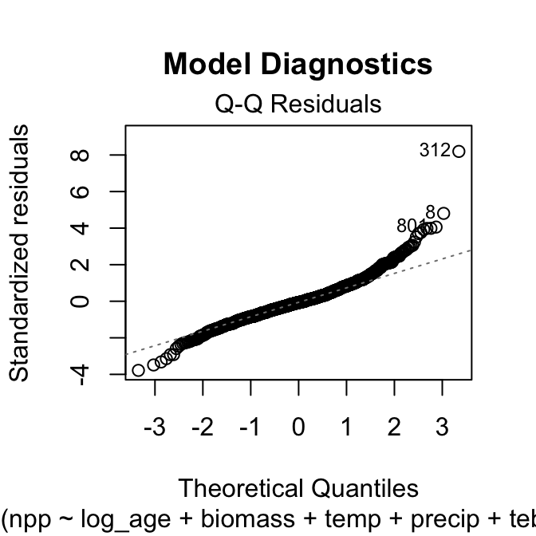
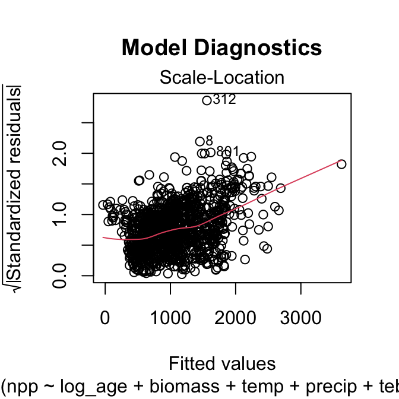
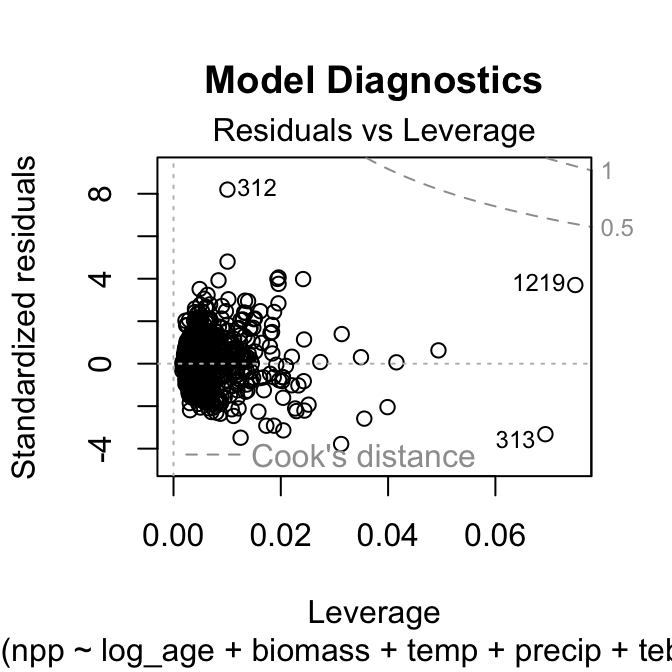
par(mfrow = c(1, 1))Residuals - its the upper left above
# Check for normality of residuals
residuals_data <- data.frame(
Fitted = fitted(model_3),
Residuals = residuals(model_3),
Standardized_Residuals = rstandard(model_3)
)
# Residuals vs Fitted plot using ggplot
ggplot(residuals_data, aes(x = Fitted, y = Residuals)) +
geom_point(alpha = 0.6) +
geom_smooth(method = "lm", color = "red") +
geom_hline(yintercept = 0, linetype = "dashed") +
labs(
title = "Residuals vs Fitted Values",
x = "Fitted Values",
y = "Residuals"
) +
theme_minimal()`geom_smooth()` using formula = 'y ~ x'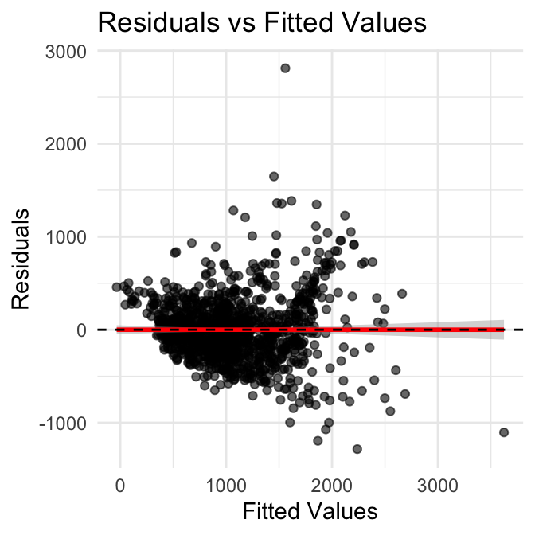
Try Response Variable Transformation
Following the original analysis, let’s try a cube root transformation of npp:
# Model 4: Cube root transformation of npp
forest_df <- forest_df %>%
mutate(npp_cuberoot = npp^(1/3))
model_4 <- lm(npp_cuberoot ~ log_age + biomass + temp + precip +
teb + leaf, data = forest_df)
summary(model_4)
Call:
lm(formula = npp_cuberoot ~ log_age + biomass + temp + precip +
teb + leaf, data = forest_df)
Residuals:
Min 1Q Median 3Q Max
-4.0936 -0.5916 -0.0030 0.6463 5.0795
Coefficients:
Estimate Std. Error t value Pr(>|t|)
(Intercept) 1.391e+01 2.601e-01 53.489 < 2e-16 ***
log_age -3.151e+00 1.470e-01 -21.436 < 2e-16 ***
biomass 1.032e-04 3.464e-06 29.791 < 2e-16 ***
temp 4.507e-02 6.265e-03 7.194 1.10e-12 ***
precip 6.361e-05 8.072e-05 0.788 0.431
teb -1.273e-02 3.078e-03 -4.135 3.79e-05 ***
leafneedle -1.029e+00 6.317e-02 -16.283 < 2e-16 ***
---
Signif. codes: 0 '***' 0.001 '**' 0.01 '*' 0.05 '.' 0.1 ' ' 1
Residual standard error: 1 on 1213 degrees of freedom
Multiple R-squared: 0.6793, Adjusted R-squared: 0.6777
F-statistic: 428.2 on 6 and 1213 DF, p-value: < 2.2e-16# Check diagnostics
par(mfrow = c(1, 1))
plot(model_4, main = "Model Diagnostics (Cube Root npp)")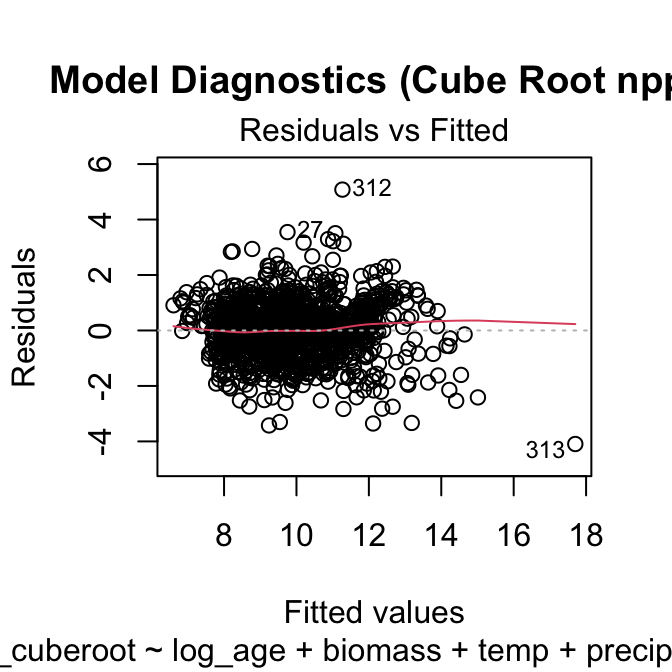
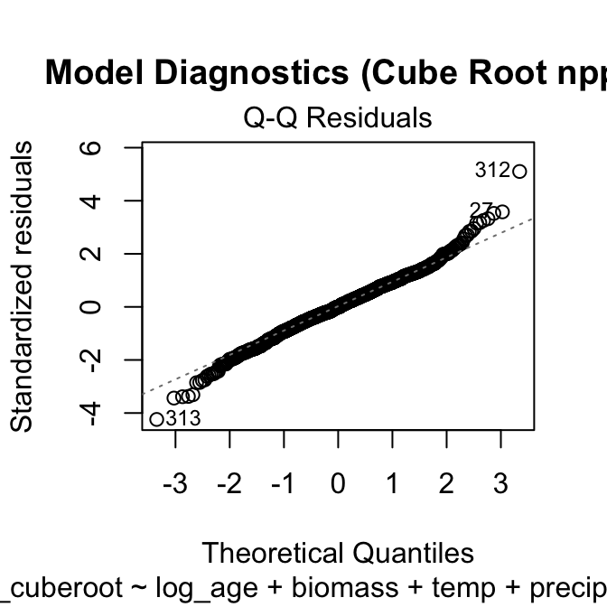
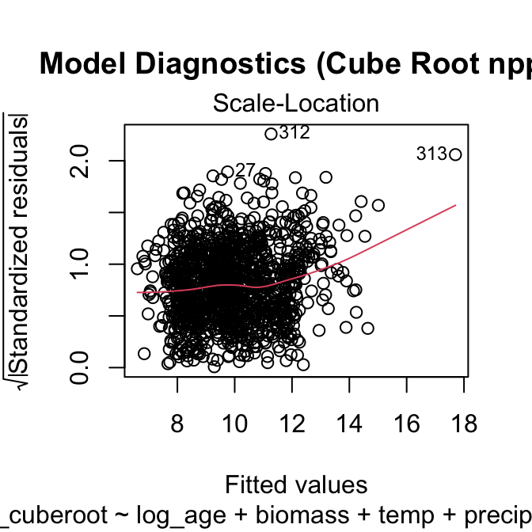
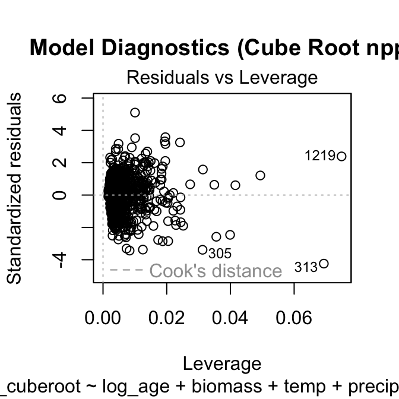
par(mfrow = c(1, 1))5. Model Simplification and Comparison
Remove Non-significant Variables
# Model 5: Remove non-significant Precipitation
model_5 <- lm(npp_cuberoot ~ log_age + biomass + temp + teb + leaf,
data = forest_df)
summary(model_5)
Call:
lm(formula = npp_cuberoot ~ log_age + biomass + temp + teb +
leaf, data = forest_df)
Residuals:
Min 1Q Median 3Q Max
-4.1085 -0.5919 0.0019 0.6459 5.1261
Coefficients:
Estimate Std. Error t value Pr(>|t|)
(Intercept) 1.396e+01 2.532e-01 55.120 < 2e-16 ***
log_age -3.159e+00 1.465e-01 -21.559 < 2e-16 ***
biomass 1.040e-04 3.306e-06 31.465 < 2e-16 ***
temp 4.719e-02 5.658e-03 8.342 < 2e-16 ***
teb -1.296e-02 3.064e-03 -4.231 2.5e-05 ***
leafneedle -1.040e+00 6.150e-02 -16.910 < 2e-16 ***
---
Signif. codes: 0 '***' 0.001 '**' 0.01 '*' 0.05 '.' 0.1 ' ' 1
Residual standard error: 1 on 1214 degrees of freedom
Multiple R-squared: 0.6791, Adjusted R-squared: 0.6778
F-statistic: 513.9 on 5 and 1214 DF, p-value: < 2.2e-16# Compare models using AIC
model_comparison <- data.frame(
Model = c("Model 4 (Full)", "Model 5 (No precip)"),
AIC = c(AIC(model_4), AIC(model_5)),
R_squared = c(summary(model_4)$r.squared, summary(model_5)$r.squared),
Adj_R_squared = c(summary(model_4)$adj.r.squared, summary(model_5)$adj.r.squared)
)
model_comparison Model AIC R_squared Adj_R_squared
1 Model 4 (Full) 3472.092 0.6792946 0.6777082
2 Model 5 (No precip) 3470.717 0.6791304 0.6778089Model Performance and Interpretation
# Get tidy summary of final model
summary(model_5, conf.int = TRUE)
Call:
lm(formula = npp_cuberoot ~ log_age + biomass + temp + teb +
leaf, data = forest_df)
Residuals:
Min 1Q Median 3Q Max
-4.1085 -0.5919 0.0019 0.6459 5.1261
Coefficients:
Estimate Std. Error t value Pr(>|t|)
(Intercept) 1.396e+01 2.532e-01 55.120 < 2e-16 ***
log_age -3.159e+00 1.465e-01 -21.559 < 2e-16 ***
biomass 1.040e-04 3.306e-06 31.465 < 2e-16 ***
temp 4.719e-02 5.658e-03 8.342 < 2e-16 ***
teb -1.296e-02 3.064e-03 -4.231 2.5e-05 ***
leafneedle -1.040e+00 6.150e-02 -16.910 < 2e-16 ***
---
Signif. codes: 0 '***' 0.001 '**' 0.01 '*' 0.05 '.' 0.1 ' ' 1
Residual standard error: 1 on 1214 degrees of freedom
Multiple R-squared: 0.6791, Adjusted R-squared: 0.6778
F-statistic: 513.9 on 5 and 1214 DF, p-value: < 2.2e-16using the sensemaker package
library(sensemakr)
# Calculate partial R-squared for all variables at once
partial_r2_sensemakr <- partial_r2(model_5)
partial_r2_sensemakr(Intercept) log_age biomass temp teb leafneedle
0.71450239 0.27686109 0.44919401 0.05421045 0.01453129 0.19064332 # Calculate partial R-squared for each variable
# Using the car package
print("Using car package Anova() with Type III sums of squares:")[1] "Using car package Anova() with Type III sums of squares:"anova_type2 <- Anova(model_5, type = "III")
print(anova_type2)Anova Table (Type III tests)
Response: npp_cuberoot
Sum Sq Df F value Pr(>F)
(Intercept) 3039.52 1 3038.225 < 2.2e-16 ***
log_age 464.99 1 464.792 < 2.2e-16 ***
biomass 990.47 1 990.043 < 2.2e-16 ***
temp 69.61 1 69.584 < 2.2e-16 ***
teb 17.91 1 17.901 2.502e-05 ***
leaf 286.08 1 285.957 < 2.2e-16 ***
Residuals 1214.52 1214
---
Signif. codes: 0 '***' 0.001 '**' 0.01 '*' 0.05 '.' 0.1 ' ' 1# Convert F-statistics to partial R-squared
# Partial R² = F * df_num / (F * df_num + df_den)
f_stats <- anova_type2$`F value`[!is.na(anova_type2$`F value`)]
df_num <- anova_type2$Df[!is.na(anova_type2$`F value`)]
df_den <- anova_type2$Df[nrow(anova_type2)] # Residual df
partial_r2_from_f <- f_stats * df_num / (f_stats * df_num + df_den)
results_table <- data.frame(
Variable = rownames(anova_type2)[!is.na(anova_type2$`F value`)],
F_statistic = f_stats,
p_value = anova_type2$`Pr(>F)`[!is.na(anova_type2$`F value`)],
Partial_R_squared = partial_r2_from_f
)
print("Complete results with partial R-squared:")[1] "Complete results with partial R-squared:"print(results_table) Variable F_statistic p_value Partial_R_squared
1 (Intercept) 3038.22472 0.000000e+00 0.71450239
2 log_age 464.79225 1.532052e-87 0.27686109
3 biomass 990.04285 2.085787e-159 0.44919401
4 temp 69.58365 1.967636e-16 0.05421045
5 teb 17.90111 2.501886e-05 0.01453129
6 leaf 285.95672 9.100842e-58 0.190643326. Alternative Approach: Standardized Variables
Following the original analysis, let’s also try the standardized approach:
# Create standardized variables
forest_standardized <- forest_df %>%
mutate(
npp_sqrt_scaled = scale(sqrt(npp))[,1],
log_age_scaled = scale(log10(age))[,1],
biomass_scaled = scale(biomass)[,1],
temp_scaled = scale(temp)[,1],
precip_scaled = scale(precip)[,1],
teb_scaled = scale(teb)[,1]
)
# Standardized model
model_std <- lm(npp_sqrt_scaled ~ log_age_scaled + biomass_scaled +
temp_scaled * precip_scaled + teb_scaled,
data = forest_standardized)
# Summary
summary(model_std)
Call:
lm(formula = npp_sqrt_scaled ~ log_age_scaled + biomass_scaled +
temp_scaled * precip_scaled + teb_scaled, data = forest_standardized)
Residuals:
Min 1Q Median 3Q Max
-3.14438 -0.38836 -0.03068 0.39178 3.01216
Coefficients:
Estimate Std. Error t value Pr(>|t|)
(Intercept) -0.064952 0.020075 -3.235 0.001247 **
log_age_scaled -0.543699 0.024500 -22.192 < 2e-16 ***
biomass_scaled 0.691415 0.025313 27.315 < 2e-16 ***
temp_scaled 0.215693 0.023304 9.256 < 2e-16 ***
precip_scaled -0.008188 0.028714 -0.285 0.775563
teb_scaled -0.071775 0.018879 -3.802 0.000151 ***
temp_scaled:precip_scaled 0.112727 0.017068 6.605 5.94e-11 ***
---
Signif. codes: 0 '***' 0.001 '**' 0.01 '*' 0.05 '.' 0.1 ' ' 1
Residual standard error: 0.6113 on 1213 degrees of freedom
Multiple R-squared: 0.6281, Adjusted R-squared: 0.6263
F-statistic: 341.5 on 6 and 1213 DF, p-value: < 2.2e-167. Key Findings and Conclusions
MULTICOLLINEARITY:
- Growing season length and temperature were highly correlated
- Removed growing season to address multicollinearity
VARIABLE TRANSFORMATIONS:
- Log transformation of age improved model fit
- Cube root transformation of npp addressed assumption violations
FINAL MODEL RESULTS:
- Significant predictors: age (negative), biomass (positive), temp (positive)
- teb had negative effect, Leaf type differences were significant
BIOLOGICAL INTERPRETATION:
- Younger stands had higher npp (for given biomass)
- Higher biomass associated with higher npp
- temp positively related to npp
- Coniferous forests had lower npp than broadleaf forests
References and Additional Notes
This analysis is based on:
- Michaletz, S.T., Cheng, D., Kerkhoff, A.J. & Enquist, B.J. (2014). Convergence of terrestrial plant production across global climate gradients. Nature, 512, 39-43.
Key Learning Points:
- Multicollinearity Detection: Use VIF values and correlation matrices
- Variable Transformations: Log and power transformations can improve model fit
- Model Diagnostics: Always check residual plots and assumption violations
- Model Comparison: Use AIC and other criteria for model selection
- Interpretation: Focus on biologically meaningful relationships
# Session information for reproducibility
sessionInfo()R version 4.6.1 (2026-06-24)
Platform: aarch64-apple-darwin23
Running under: macOS Tahoe 26.6.2
Matrix products: default
BLAS: /Library/Frameworks/R.framework/Versions/4.6/Resources/lib/libRblas.0.dylib
LAPACK: /Library/Frameworks/R.framework/Versions/4.6/Resources/lib/libRlapack.dylib; LAPACK version 3.12.1
locale:
[1] en_US.UTF-8/en_US.UTF-8/en_US.UTF-8/C/en_US.UTF-8/en_US.UTF-8
time zone: America/Chicago
tzcode source: internal
attached base packages:
[1] stats graphics grDevices utils datasets methods base
other attached packages:
[1] sensemakr_0.1.6 see_0.14.1 performance_0.17.1 broom_1.0.13
[5] GGally_2.4.0 corrplot_0.95 car_3.1-5 carData_3.0-6
[9] lubridate_1.9.5 forcats_1.0.1 stringr_1.6.0 dplyr_1.2.1
[13] purrr_1.2.2 readr_2.2.0 tidyr_1.3.2 tibble_3.3.1
[17] ggplot2_4.0.3 tidyverse_2.0.0
loaded via a namespace (and not attached):
[1] gtable_0.3.6 xfun_0.60 htmlwidgets_1.6.4 insight_1.5.2
[5] lattice_0.22-9 tzdb_0.5.0 vctrs_0.7.3 tools_4.6.1
[9] generics_0.1.4 stats4_4.6.1 parallel_4.6.1 pkgconfig_2.0.3
[13] Matrix_1.7-6 RColorBrewer_1.1-3 S7_0.2.2 lifecycle_1.0.5
[17] compiler_4.6.1 farver_2.1.2 codetools_0.2-20 htmltools_0.5.9
[21] yaml_2.3.12 Formula_1.2-6 pillar_1.11.1 crayon_1.5.3
[25] abind_1.4-8 nlme_3.1-170 ggstats_0.13.0 tidyselect_1.2.1
[29] digest_0.6.39 stringi_1.8.9 labeling_0.4.3 splines_4.6.1
[33] fastmap_1.2.0 grid_4.6.1 cli_3.6.6 magrittr_2.0.5
[37] utf8_1.2.6 withr_3.0.3 scales_1.4.0 backports_1.5.1
[41] bit64_4.8.2 timechange_0.4.0 rmarkdown_2.31 bit_4.6.0
[45] otel_0.2.0 hms_1.1.4 evaluate_1.0.5 knitr_1.51
[49] mgcv_1.9-4 rlang_1.3.0 glue_1.8.1 vroom_1.7.1
[53] jsonlite_2.0.0 R6_2.6.1